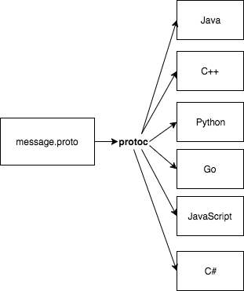

Protocol Buffers
Serializing Structured Data
What is a Protocol Buffer?
"Protocol buffers are Google's language-neutral, platform-neutral, extensible mechanism for serializing structured data – think XML, but smaller, faster, and simpler"
Important: Structured Data
Some advantages
- Very small size
- Very fast processing
- Typed messages (safety)
- Schema Evolution (forward compatibility)
- Language / Platform agnostic
Some limitations
- Not human readable / editable
- Hard to parse without knowing the schema
- Protobuf doesn't prescribe how to do streaming
Example
message Person {
string name = 1;
int32 id = 2;
string email = 3;
}
Google provided initial official support for Java, C++ and Python
More languages followed in time. Most major programming languages are supported
What this means is that you define your data structures in Protobuf format, and automatically generate code in your language of choice
This is done with the Protocol Buffers Compiler, protoc
On a Mac, install with brew install protobuf

protoc -I=protobuf --java_out=java/protobuf/src/main/java protobuf/addressbook.proto
Using Protocol Buffers in Akka applications
The problem with Java Serialization
- It's actually kind of big and clunky by today's standards
- Security: You just can't trust a stream of data serialized this way
- Everyone's favorite: Performance!. It's actually not very fast
- In Scala, storing data with Java Serialization might break applications that migrate to next major version of Scala
Akka uses Java Serialization by default
This is not a big problem if your application is local (not clustered) and you are not using Akka Persistence
Akka Serialization mechanism is extensible
Several options available (protobuf, Kryo, roll your own...)
In an event sourced system, schema evolution is a huge problem
How do we change our data schema, while maintaining the ability to read old messages stored in the journal?
Protocol Buffers is a format that offers that capability
Main idea: separate the domain object model from its serialized representation
Akka Serialization Configuration
akka {
actor {
serializers {
java = "akka.serialization.JavaSerializer"
proto = "akka.remote.serialization.ProtobufSerializer"
myown = "docs.serialization.MyOwnSerializer"
}
serialization-bindings {
"java.lang.String" = java
"docs.serialization.Customer" = java
"com.google.protobuf.Message" = proto
"docs.serialization.MyOwnSerializable" = myown
"java.lang.Boolean" = myown
}
}
}
Parting thought
I see almost no reason to use JSON for microservice internal communication